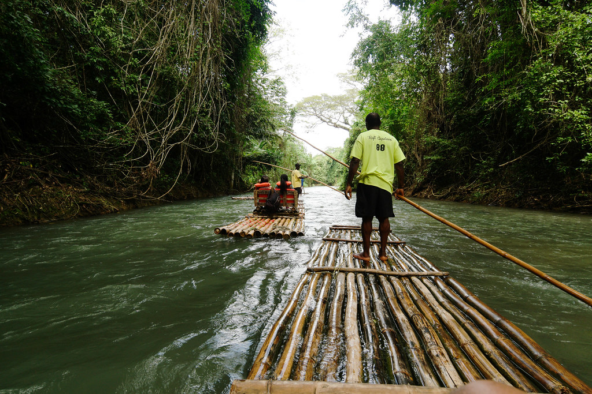

About us
Jamaica Reggae White River Rafting was established in 1988. We are a family-oriented place, so all ages are welcome. We have noticed the limited white water rafting tours, and we want others to experience the tranquility and joy that comes from being in nature. We are targeting local Jamaicans, tourists or anyone interested in white water rafting or interested in learning about white water rafting. One of the best tourist attractions in Jamaica, Jamaica Reggae White River Rafting has been satisfying customers for over 35 years. We raft the Martha Brae River and the Rio Cobre. We are a family operated establishment and love to put smiles on our customers' faces.